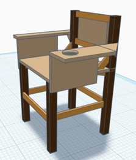

Ergonomic Exam Chair
Project Overview
As part of the University of Pittsburgh's Foundations of Engineering Design course, our team was tasked with designing and fabricating a functional exam chair from raw materials. The project was structured to mirror the professional engineering design lifecycle — moving from a written problem statement through requirements definition, concept generation, CAD modeling, physical fabrication, and final load testing. The deliverable was not a prototype or a sketch: it was a finished, load-bearing product that had to meet defined structural and ergonomic specifications.
Design Process
We followed a structured engineering design lifecycle from start to finish:
Translated the project brief into measurable design requirements: load capacity, seat dimensions, back angle range, material constraints, and fabrication timeline.
Generated three distinct chair concepts using sketching and functional decomposition. Evaluated concepts against requirements using a weighted decision matrix, selecting the design that best balanced structural performance, material efficiency, and fabrication feasibility.
Produced detailed CAD drawings of the selected design, specifying all joint types, member dimensions, and assembly sequences. The model guided material purchasing and served as the fabrication reference throughout construction.
Built the chair using dimensional lumber, applying wood joinery techniques and mechanical fasteners to assemble the frame. Joint construction was the most critical phase — failures in chair structures almost always originate at connection points, so each joint was fitted, squared, and fastened with care.
Performed static load testing to verify the chair met the 600 lb structural requirement. Documented deformation, joint behavior, and any signs of stress under load, then compared results against the original design specifications.


Specifications
What I Learned
This project made the engineering design lifecycle concrete in a way that coursework alone cannot. Writing requirements is easy when they stay on paper — the challenge is holding to them when fabrication reveals that a joint you designed in CAD doesn't fit the way you expected, or that a member dimension you specified is unavailable in standard lumber sizing.
Working through those gaps between design intent and physical reality is where real engineering judgment develops. The decision matrix we used for concept selection also introduced me to a structured approach to trade-off analysis that I have since applied in other projects — particularly in the Accessible Ride-On Vehicle, where material, weight, and usability requirements had to be balanced against each other under similar constraints.
Skills Demonstrated
- Full engineering design lifecycle from requirements through validation
- CAD modeling and technical drawing production
- Structural design and load analysis for wood construction
- Fabrication using hand and power woodworking tools
- Weighted decision matrix for engineering trade-off analysis
- Static load testing and design validation